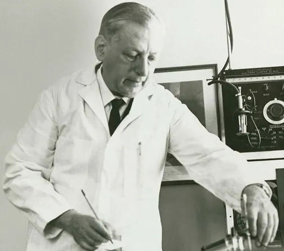

Сэмюэл Рубен, Duracell и принципы, которые дороже денег Начало пути: гений без гроша

В конце 1920-х годов в США жил изобретатель-самоучка по имени Сэмюэл Рубен. Его финансовое положение было катастрофическим: небольшая домашняя мастерская едва отапливалась, а покупка даже простых расходников превращалась в проблему. Несмотря на это, Рубен упорно работал над усовершенствованием радиотехники. Для своих экспериментов ему требовалась вольфрамовая проволока — крайне дорогой и капризный в обработке материал. В то время единственным производителем качественных вольфрамовых нитей на территории штата Нью-Йорк считалась компания промышленника Филиппа Мэллори.
По сохранившимся свидетельствам, Рубен без предварительной договорённости посетил завод P. R. Mallory. Денег у него не было, поэтому он попросил отдать ему бракованные обрезки проволоки — те, что обычно выбрасывались. Мэллори сначала воспринял просьбу как дерзость, однако после знакомства с чертежами посетителя быстро осознал, что перед ним не просто бедняк, а талантливый инженер. В результате промышленник согласился финансировать исследования Рубена и обеспечивать его необходимыми ресурсами, а взамен получил права на патенты. Это был классический пример взаимовыгодного сотрудничества: один генерировал перспективные решения, второй имел производственные возможности для их коммерциализации. Радиобум и военный контракт
Совместное предприятие начало выпуск радиокомпонентов в годы стремительного роста популярности радио — в 1920–1930-х годах. В тот период приёмники стали доступны массовому потребителю, и рынок требовал всё новых деталей.
Вторжение Японии и последующее вступление США во Вторую мировую войну изменили приоритеты. Армия столкнулась с серьёзным техническим вызовом: солевые элементы питания, использовавшиеся в переносных рациях, отказывали при высокой влажности и температуре. Это создавало прямую угрозу для связи на театрах военных действий. В 1940 году Пентагон учредил Национальный совет изобретателей — структуру, задача которой заключалась в поиске перспективных решений. Рубен представил на рассмотрение проект ртутной батареи, устойчивой к жаре, и почти сразу получил крупный государственный заказ.
Примечательно, что руководство P. R. Mallory не горело желанием браться за батарейную тематику. У компании не было профильных компетенций, и она долго сопротивлялась. Однако военные настояли — и производство было запущено. Разработанный Рубеном элемент питания оказался значительно компактнее и долговечнее предыдущих версий. К концу войны ежедневный объём выпуска исчислялся миллионами штук. Это превратило Mallory из рядового поставщика в одного из ключевых подрядчиков военно-промышленного комплекса. Послевоенные вызовы и конкуренция
По завершении боевых действий оборонные закупки резко пошли на спад. Однако внутренний спрос в США, наоборот, начал расти. Бурное развитие пригородных зон и рост интереса к активному досугу стимулировали продажи портативных устройств — от фонарей до радиоприёмников. Это создало устойчивый потребительский спрос на элементы питания.
Однако на рынке уже действовал мощный игрок — Union Carbide, владевшая брендом Eveready. Их продукция стоила всего 25 центов и активно продвигалась через печатные СМИ. Mallory в те годы не могла соперничать с ними по рекламным бюджетам и объёмам сбыта. Прибыльность была низкой, а попытки масштабирования упирались в ценовой демпинг конкурентов. Поворотный момент: контракт с Kodak
Перелом наступил в 1964 году, когда Mallory удалось заключить эксклюзивное соглашение с Kodak. В тот момент этот фотогигант анонсировал камеру Instamatic 100 со встроенной фотовспышкой. Для её работы требовался импульсный ток до 3 ампер — старые модели батарей не выдерживали такой нагрузки и мгновенно разряжались. Рубен снова предложил решение: он разработал щелочную батарею RM-1, которая обеспечивала необходимую мощность и работала значительно дольше предшественников.
Kodak интегрировала этот элемент в конструкцию своей камеры и рекомендовала его как стандартный. Instamatic 100 продавалась по цене около 13 долларов и отличалась предельной простотой зарядки: плёночный картридж можно было установить практически на ощупь за несколько секунд. Камера мгновенно стала хитом. Всего за несколько лет Kodak реализовала десятки миллионов экземпляров, и вслед за этим стремительно росла выручка Mallory Battery Company. К середине 1960-х она достигла 100 миллионов долларов в год, что по нынешнему курсу сопоставимо с 1 миллиардом.
Именно благодаря этой камере массовый потребитель впервые столкнулся с необходимостью покупать дорогие щелочные батареи. Ранее на рынке доминировали ртутные элементы — они были эффективны, но токсичны и сложны в утилизации.
Позднее, в 1969 году, продукты Mallory применялись в космической программе NASA — батареи этого типа устанавливались на оборудование миссии Apollo 11. Часть из них, предположительно, осталась на поверхности Луны. Ребрендинг и рождение Duracell
Несмотря на технологическое превосходство, Mallory испытывала сложности в массовом сегменте. Рядовые покупатели не понимали разницы между разными типами элементов — на упаковках значилось одно слово «батарейка», и выбор делался в пользу самого дешёвого варианта. Компания оказалась в парадоксальной ситуации: лучший продукт приносил минимальную прибыль.
В 1964 году руководство приняло решение о смене маркетинговой стратегии. Был зарегистрирован товарный знак Duracell — составное слово от английских durable (долговечный) и cell (элемент). Название позиционировало продукт как премиальное решение с акцентом на срок службы. Этому сопутствовал и характерный дизайн: чёрный корпус с медной верхней частью, которая визуально ассоциировалась с наукой, энергией и надёжностью. На полках магазинов такая батарейка выделялась среди конкурентов, и это подкрепляло премиальное восприятие. Рекламный феномен: розовый кролик
В 1973 году стартовала одна из самых известных рекламных кампаний XX века. По сюжету, несколько одинаковых игрушечных кроликов с барабанами соревновались в продолжительности работы. Персонажи на дешёвых батарейках постепенно сбавляли темп и замирали, а кролик, питающийся от Duracell, продолжал стучать без остановки. Его движения синхронизировались со звуком метронома, чтобы подчеркнуть стабильность и равномерность разряда.
Кампания развивалась: в новых роликах кролик покорял горы, переплывал водоёмы, играл в футбол — и в каждом эпизоде его «противники» останавливались раньше. Образ стал настолько узнаваемым, что прочно ассоциировался с выносливостью и надёжностью.
Однако в дальнейшем маркетологи Duracell ошибочно предположили, что интерес к персонажу угас, и не стали продлевать права на него в США. Этот шаг оказался роковым. Конкуренты из Energizer перехватили инициативу: в 1989 году они запустили собственную рекламную кампанию с розовым кроликом, изменив его облик (тёмные очки, сандалии). Началась серия судебных разбирательств и рекламных войн. Издержки росли, и в итоге компании предпочли договориться. В 1992 году подписано соглашение: Energizer получила права на образ кролика в США и Канаде, а Duracell — на всех остальных территориях, включая Европу, Азию и Латинскую Америку. Смена владельцев и путь к независимости
Корпоративная история бренда также насыщена трансформациями. В 1978 году P. R. Mallory & Co. приобрела Dart Industries. В 1980-х батарейное направление было выделено в самостоятельный бизнес. Затем, в 1996 году, компания перешла под контроль Gillette. Девять лет спустя, в 2005 году, корпорация Procter & Gamble купила Gillette вместе с Duracell за 57 миллиардов долларов. В 2016 году произошла ещё одна крупная сделка: инвестор Уоррен Баффетт обменял принадлежавшие его фонду Berkshire Hathaway акции P&G на Duracell, фактически вернув бренду статус независимой компании — по его мнению, внутри огромной P&G Duracell терял гибкость и эффективность. Личность Рубена: принципы и патенты
Сэмюэл Рубен прожил 88 лет и скончался в 1988 году. Не имея формального высшего образования, он стал автором более трёхсот запатентованных изобретений. Всю свою жизнь он оставался независимым исследователем: работал в собственной лаборатории, не состоял в штате P. R. Mallory и принципиально избегал офисного режима, не желая подчиняться рабочим графикам.
Особого внимания заслуживает его этическая позиция. В период войны Рубену начислялись роялти, достигавшие 2 миллионов долларов в год. Однако он сознательно отказался от них, оставив лишь фиксированную сумму в 150 тысяч. Мотивация была проста и жёстка: он не считал допустимым обогащаться за счёт военных конфликтов и гибели людей. Этот поступок навсегда отделил его от многих коммерческих изобретателей того времени.